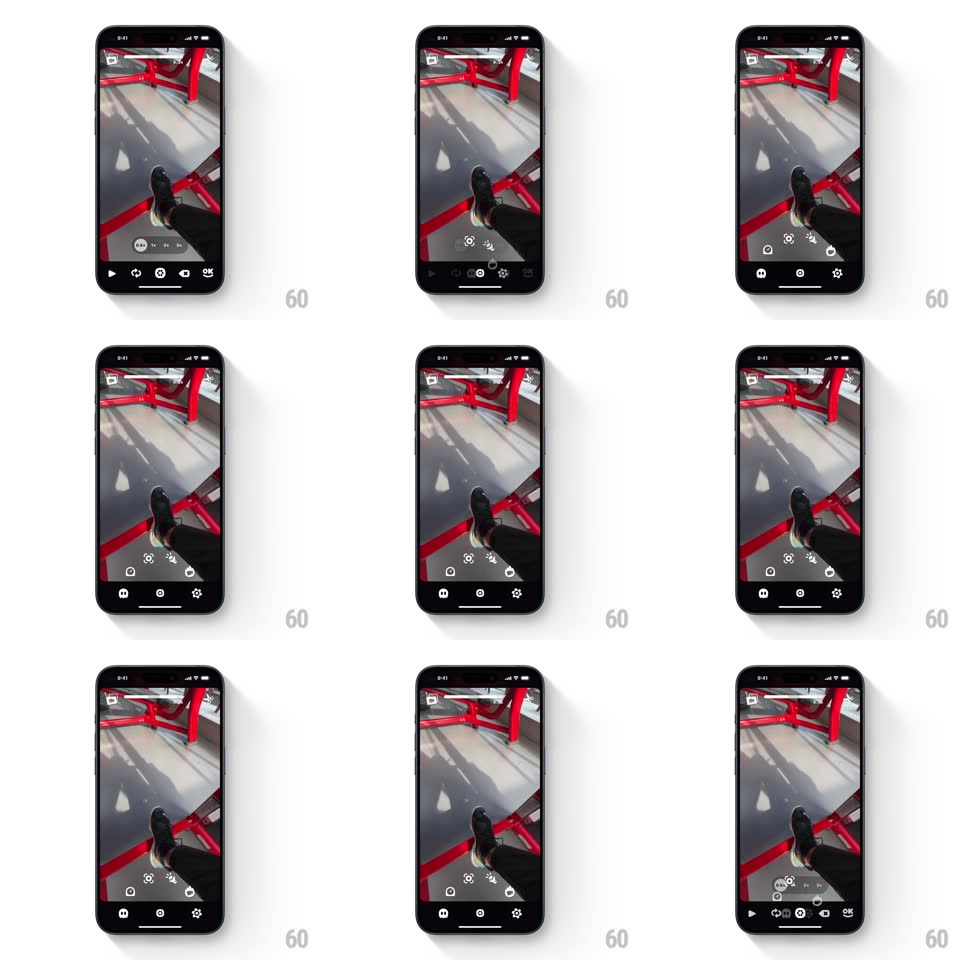

Media
Frame-by-frame

Rebuild this interaction 1:1: OK Video's action menu - tapping the segmented progress bar at the top of the camera interface expands it downward into a dark status panel of clip details, then it collapses back into the thin bar.

Rebuild this interaction 1:1: OK Video's action menu - tapping the segmented progress bar at the top of the camera interface expands it downward into a dark status panel of clip details, then it collapses back into the thin bar. ## Integration Integration: stack-agnostic spec - springs given as stiffness/damping, timed motions as duration + curve; map every value to your framework and animation library of choice. ## Scene Camera viewfinder with a thin segmented progress bar pinned top (white segments per clip, the latest in red with an x). The expanded state: a dark panel hanging from the top showing clip rows with durations and per-row actions. ## Motion spec Pattern: top-bar-to-panel shared-element expansion. - Tap the progress bar: the bar morphs into the panel - its segments stretch horizontally into the panel's top edge (250ms, ease-out) while the panel body slides down from beneath it (spring ~330/24, slight overshoot). - Clip rows stagger in top-down (fade + 8px drop, 180ms, 50ms apart) as the panel opens; the viewfinder behind dims 15%. - The panel's own close: rows stagger out bottom-up (120ms), the panel slides up and compresses back into the thin segmented bar (220ms, ease-in), segments snapping back to their clip widths. - Total round trip under 2s for a quick peek. ## Calibration - The shared element is real: the bar IS the panel's collapsed state, not a separate view that fades in. - Panel corners round to 14px as it grows; the bar's are 3px - interpolate, don't snap. ## Reduced motion Panel crossfades over the bar. ## Don't miss - The expansion reads as the bar unfolding - anchor the top edge to the bar's exact frame. - The red current-clip segment stays visible as the panel's top hairline.